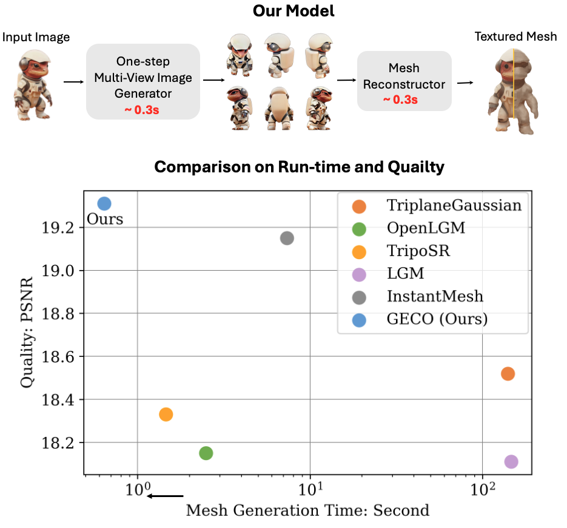
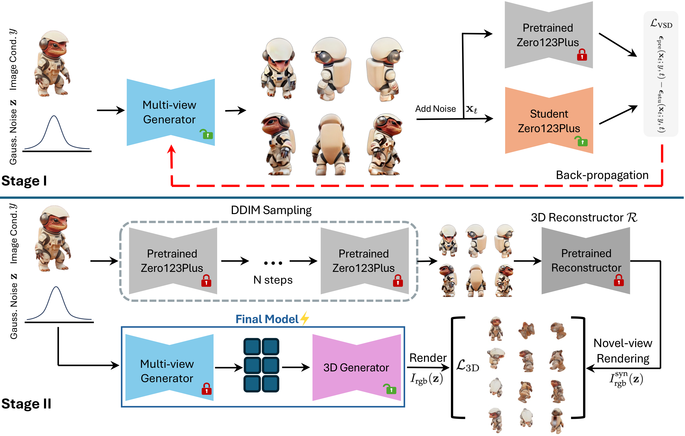

GECO: Generative Image-to-3D within a SECOnd
A feedforward 3D generation method that turns a single image into a coherent 3D asset in under one second, with a second-stage distillation step for stronger multi-view consistency.
1University of Pennsylvania 2Apple 3The University of Hong Kong

GECO reconstructs a textured mesh from a single image in ~0.6s, with a better quality–runtime trade-off than prior work.
Abstract
TL;DR: We propose a 3D distillation pipeline for feedforward 3D generation that operates in less than one second.
Our distillation method in GECO supports different teachers such as LGM and InstantMesh.
3D generation has seen remarkable progress in recent years. Existing techniques, such as score distillation methods, produce notable results but require extensive per-scene optimization, impacting time efficiency. Alternatively, reconstruction-based approaches prioritize efficiency but compromise quality due to limited handling of uncertainty. GECO addresses these issues with a two-stage approach. First, we train a single-step multi-view generative model with score distillation. Then, a second-stage distillation aligns the multi-view prediction to reduce view inconsistency. The result is a balanced approach to 3D generation that optimizes both quality and efficiency.
Pipeline

GECO trains a single-step multi-view generator with score distillation, then applies a second-stage distillation to align the final 3D representations using multi-view rendering.
Image to 3D
GECO produces strong image-to-3D reconstructions on in-the-wild inputs.
Reconstruction Quality
GECO handles back-view ambiguity more reliably than reconstruction-only baselines.
Meshes
BibTeX
@article{wang2025geco,
title={GECO: Fast Generative Image-to-3D Within One SECOnd},
author={Wang, Chen and Gu, Jiatao and Long, Xiaoxiao and Liu, Yuan and Liu, Lingjie},
journal={IEEE Transactions on Visualization and Computer Graphics},
year={2025},
publisher={IEEE}
}